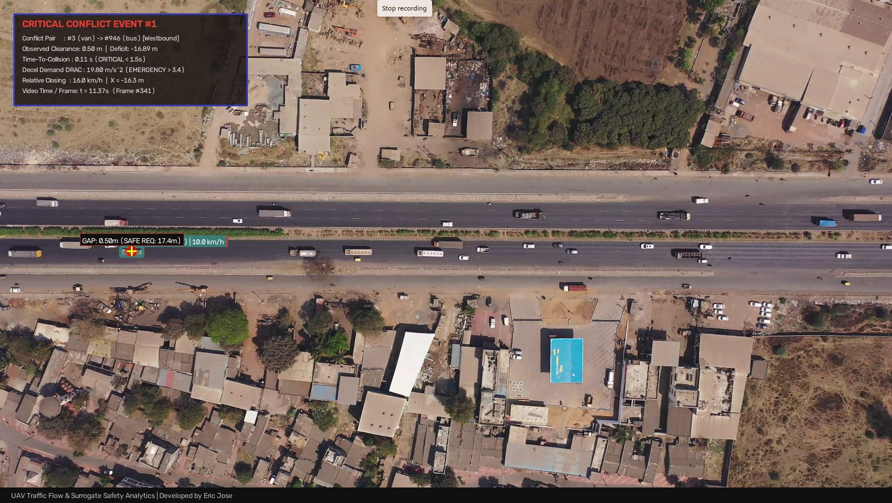

Flow & Corridor Volume
8,626 veh/h
West: 5,032
East: 3,594
Operating Speeds
26.6 km/h (ut)
Space: 25.4 km/h
V85: 31.7 km/h
Collision Risk Threat
2,391 Following
Min TTC: 0.11s
209 Encroach
Fleet & Density
48 active / 160 total
Density: 175.1 v/km
Cars: 64.6%
Critical-Distance & Kinematic Stopping Separation Model
Evaluates physical vehicle separation gaps against AASHTO / IRC stopping distance requirements: dsafe = vf • tr + vf²/(2af) - vl²/(2al)
1.5s
3.4 m/s²
Annotated UAV Collision-Risk Frames (Top 10 High-Risk Conflict Events)
Precision video frames with vehicle bounding boxes, connecting distance vector lines, conflict crosshairs, and telemetry HUDs.
Event:

Frame #341 • t = 11.37s • National Highway 48

Rank #1 Critical
#3 Van → #946 Bus
Direction
Westbound
Observed Clearance Gap
Separation between centroids
0.50 m
Kinematic Safe Headway
Stopping distance (dsafe)
17.39 m
Safety Margin / Deficit
Δd = dclear - dsafe
-16.89 m
Time-To-Collision (TTC):
0.11 s
Deceleration Demand (DRAC):
19.80 m/s²
Closing Speed (Δv):
16.0 km/h
Speeds (Follower / Leader):
26.0 / 10.0 km/h
Corridor Coordinate (X):
-16.3 m
Calibration Status:
Homography Verified
Evaluated Collision Conflict Pairs (195 Evaluated Pairs)
Interactive sorting and filtering of microscopic collision risks ranked by composite severity score.
| Rank | Follower | Leader | Direction | Clear Gap | Min TTC | Max DRAC | Closing Speed | Severity | Risk Tier |
|---|
Showing 1 to 10 of 195 entries
1 / 20
Vehicle Fleet Composition
48 Moving VehCars
31 (64.6%)
Vans
8 (16.7%)
Buses
7 (14.6%)
Operating Speed by Vehicle Class (km/h)
Mean km/h
Cars: 28.4 km/h
Heavy Fleet: 22.2 - 23.7 km/h
Speed Frequency Distribution

Spatial Hotspot Heatmap

Space-Time (x-t) Trajectory Profiles (160m Highway Corridor)
Continuous vehicle position along longitudinal road axis (X) over time. Slope indicates instantaneous velocity.

Road-Plane Perspective Overlay

Bird's-Eye Orthogonal Metric Projection

Macroscopic Traffic Relations
Total Flow (q):
8,625.6 veh/h
Density (k):
175.1 veh/km
Space-Mean Speed (us):
25.44 km/h

Time-To-Collision (TTC) Distribution

Post-Encroachment Time (PET) Distribution

Automated 7-Stage Traffic Processing Pipeline
Ready> UAV Traffic Analytics Engine initialized.
> Ready. Run via UI or PowerShell CLI:
python scripts/run_automated_pipeline.py --input "videos/National Highway 48.mp4" --lane-width 3.5